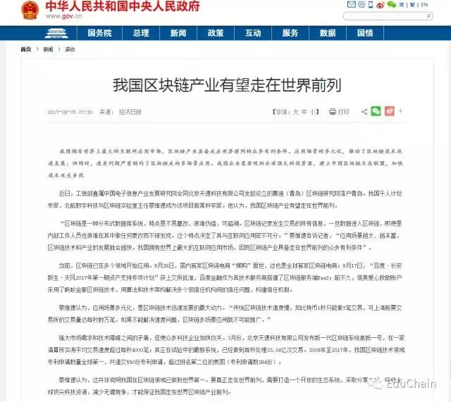

亲爱的教育链（EduChain）支持者：
大家好！
EduChain教育链作为区块链领域首个教育行业区块链项目，我们一直专注于教育行业垂直领域，钟情于教育模式的创新与落地。9月4日15:00，中国人民银行、中央网信办、工业和信息化部、工商总局、银监会、证监会、保监会联合发布了《关于防范代币发行融资风险的公告》。 我们响应国家政策，拥护政府监管，继续推动区块链产业发展，现对教育链的下一步发展作如下安排：
1.教育链团队会继续教育链的研发工作，继续以白皮书中描述的目标推进教育链项目；
2.对于原计划9月10日（教师节）开启的ICO将暂停，且暂停国内ICO 的宣传和发行工作，待政策进一步明朗后根据政策的要求进行安排与调整；
3.教育链一贯以开放的态度拥抱监管和遵守国家相关法律法规，鉴于国家有关部门最新政策，为了保护广大支持者的利益，参加教育链私募或官网直投的支持者，可以选择退币；
4.如果选择退币，请发送邮件至官方邮箱educhain.edu@hotmail.com，标题为“教育链退币”，并在邮件中写明您的姓名、手机号和身份证号码，工作人员核实后为您办理退币事宜；
5.对于愿意继续支持我们的支持者，我们会在后期增加项目进展信息披露，最大限度的保障这些支持者的利益。
教育链项目启动至今，得到了社区内很多人的坚定支持，收获了更多的是动力和信心。是大家的支持让我们怀揣初心，不忘使命。
教育链团队扎根于区块链行业，推进区块链技术进步的脚步不会停下，教育链项目的研发不会停下，教育链将打造全球教育共享资源平台的目标不会改变。
到目前为止，教育链还未正式开启ICO的程序，同时也会中止ICO的进程，并严格按照政府有关部门的要求对现存有关业务予以调整，加强信息披露工作。在这个关键节点，我们重申下我们的使命和态度：
1、 坚定不移的继续进行“区块链+教育”模式的探索，将区块链技术的工具价值切实应用在教育产业；
2、 我们始终认为ICO只是融资方式，并非项目本身，我们的初衷是利用区块链技术实现教育模式的创新及教育生态的重构；
3、 从项目本身的价值来说，教育链这一路走来，获得了很多的认可和支持。这充分表明了项目本身的前景和可行性；
4、 区块链技术本身无争议，是具有巨大潜在价值的革命性技术，因此，“区块链+教育”的模式将有无法想象的价值前景；
5、 央行等机构发文尚需进一步解读，我们会在政府文件精神的指导下进行相应调整；
6、 教育链团队会不忘初心、继续前进，为实现区块链在教育领域的巨大价值而奋斗！
在此，教育链团队感谢各位支持者的鼎力支持。
附： 此次七部委仅仅是针对ICO进行了定义，并未否定区块链，恰恰相反我国政府一贯都是坚定支持区块链技术及应用的发展，附上今天上午中华人民共和国中央人民政府官网最新发文截图： 